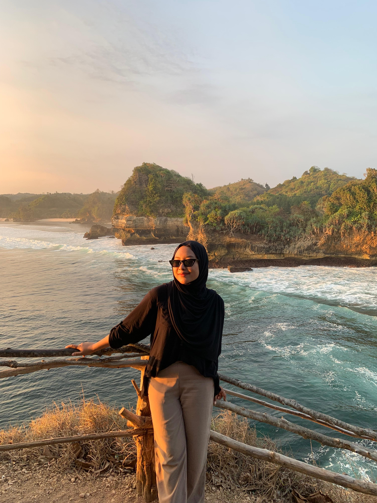
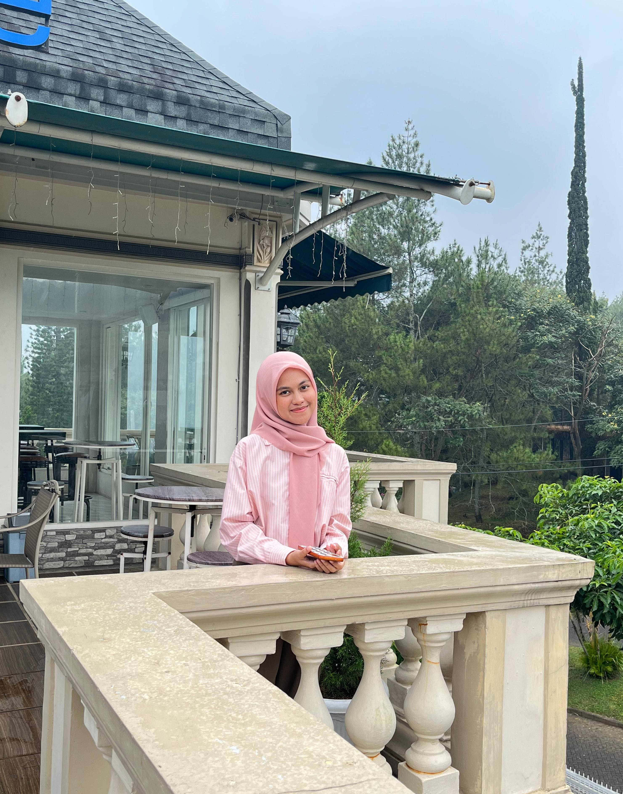
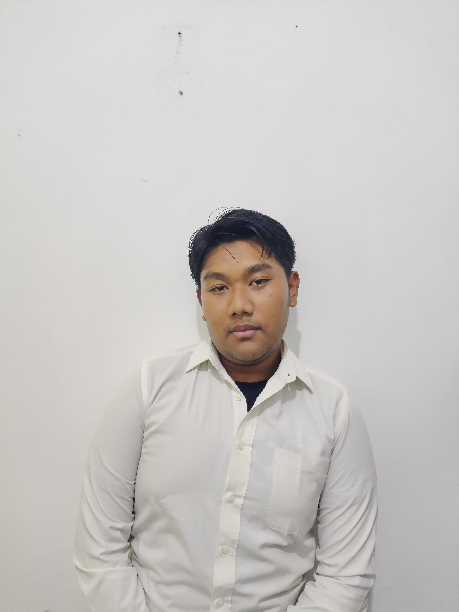

Hai, Kami Anggota Kelompok 2
Selamat datang di halaman kami!



"Hai, aku Vania Bunga Aneira Arnoldy. Mahasiswi Program Studi Pendidikan Matematika, Universitas Muhammadiyah Malang"
"Hai, aku Nabila Juliana Faisal. Mahasiswi Program Studi Pendidikan Matematika, Universitas Muhammadiyah Malang"
"Hai, aku Helmy Ibnu Haidar. Mahasiswa Program Studi Pendidikan Matematika, Universitas Muhammadiyah Malang"